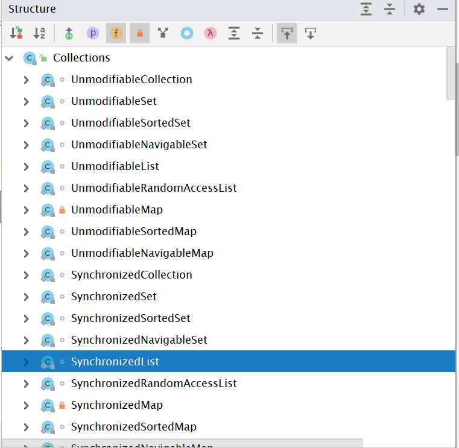

大家都知道ArrayList线程不安全，怎么个不安全法呢？上代码：
public class ContainerNotSafeDemo {
public static void main(String[] args) throws InterruptedException {
List<String> list = new ArrayList<>();
for (int i = 0;i<5;i++){
new Thread(()->{
list.add(Thread.currentThread().getName());
System.out.println(Thread.currentThread().getName()+"\t"+list);
}).start();
}
}
}
//运行结果如下： 多个线程同时修改列表的元素，产生了并发修改异常
java.util.ConcurrentModificationException
at java.util.ArrayList$Itr.checkForComodification(ArrayList.java:909)
at java.util.ArrayList$Itr.next(ArrayList.java:859)
at java.util.AbstractCollection.toString(AbstractCollection.java:461)
at java.lang.String.valueOf(String.java:2994)
at java.lang.StringBuilder.append(StringBuilder.java:131)
at juc.ContainerNotSafeDemo.lambda$main$0(ContainerNotSafeDemo.java:26)
at java.lang.Thread.run(Thread.java:748)为啥呢？看一下add()方法的源码：
public boolean add(E e) {
ensureCapacityInternal(size + 1); // Increments modCount!!
elementData[size++] = e;
return true;
}可以看到仅仅是在扩容和添加操作，并没有任何的线程安全控制。所以在实际的高并发场景下，ArrayList的应用很有局限。
注意到，ArrayList的add方法并没有任何保证线程安全的机制 ~ 所以不安全了。怎么解决呢？首先想到的是加锁，凑巧的是Vector已经为我们提供了安全的add方法：
public class ContainerNotSafeDemo {
public static void main(String[] args) throws InterruptedException {
List<String> list = new Vector<>();//修改为Vector对象
for (int i = 0;i<3;i++){
new Thread(()->{
list.add(Thread.currentThread().getName());
System.out.println(Thread.currentThread().getName()+"\t"+list);
}).start();
}
}
}
//结果如下：
Thread-0 [Thread-0]
Thread-2 [Thread-0, Thread-2]
Thread-1 [Thread-0, Thread-2, Thread-1]这么看来，在这种情况下多线程的添加操作是没有任何问题的？那么，这么做真的可取嘛？尝试查看Vector的add()方法源码：
public synchronized boolean add(E e) {
modCount++;
ensureCapacityHelper(elementCount + 1);
elementData[elementCount++] = e;
return true;
}可以看到：Vector使用了synchronized关键字来保证线程安全。可是为了添加一个的操作，加了个重锁，这样做在多线程环境下会造成严重的资源浪费与性能损耗！！高并发情况下是万万不可取的。矛盾来了：ArrayList可以提升并发性，但是牺牲了线程安全性，而Vector恰恰与之相反。所以，我们在不同的场合下可以根据业务需求有所取舍。
一个神奇的工具类——Collections，看一下它的结构：

可以看到这个工具类提供了SynchronizedList、SynchronizedMap、SynchronizedSet等看名字就很安全的类，怎么实现的嗫？看Collections.synchronizedList(List list) 方法源码：
public static <T> List<T> synchronizedList(List<T> list) {
return (list instanceof RandomAccess ?
new SynchronizedRandomAccessList<>(list) :
new SynchronizedList<>(list));
}我们在传值的时候传的是ArrayList的对象，ArrayList它又实现了RandomAccess，所以返回 new SynchronizedRandomAccessList<>(list, mutex)对象，但是：
static class SynchronizedRandomAccessList<E>
extends SynchronizedList<E>
implements RandomAccess {
...
}
//它又继承了SynchronizedList，所以返回的还是SynchronizedList对象看SynchronizedList它的源码怎么写：
static class SynchronizedList<E>
extends SynchronizedCollection<E>
implements List<E> {
...
final List<E> list;
SynchronizedList(List<E> list) {
super(list);
this.list = list;
}
SynchronizedList(List<E> list, Object mutex) {
super(list, mutex);
this.list = list;
}
...
...
public E get(int index) {
synchronized (mutex) {return list.get(index);}
}
public E set(int index, E element) {
synchronized (mutex) {return list.set(index, element);}
}
public void add(int index, E element) {
synchronized (mutex) {list.add(index, element);}
}
public E remove(int index) {
synchronized (mutex) {return list.remove(index);}
}
...
}可以看到，SynchronizedList 的实现里，get, set, add 等操作都加了 mutex 对象锁，再将操作委托给最初传入的 list。mutex来自哪里？
SynchronizedCollection(Collection<E> c) {
this.c = Objects.requireNonNull(c);
mutex = this; //mutex就是这个list本身咯~
}
还是下边这段代码，进行了一下简单的修改：
public class ContainerNotSafeDemo {
public static void main(String[] args) throws InterruptedException {
List<String> list = new CopyOnWriteArrayList<>();
for (int i = 0;i<3;i++){
new Thread(()->{
list.add(Thread.currentThread().getName());
System.out.println(Thread.currentThread().getName()+"\t"+list);
}).start();
}
}
}使用到了new CopyOnWriteArrayList<>();，字面意思看来时：写时复制集合。
先来了解一下Copy-On-Write(写时复制技术)：通俗的讲，写时复制技术就是不同进程访问同一资源的时候，只有在写操作，才会去复制一份新的数据，否则都是访问同一个资源。
CopyOnWriteArrayList，是一个写入时复制的容器，它是如何工作的呢？简单来说，就是平时查询的时候，都不需要加锁，随便访问，只有在写入/删除的时候，才会从原来的数据复制一个副本出来，然后修改这个副本，最后把原数据替换成当前的副本。修改操作的同时，读操作不会被阻塞，而是继续读取旧的数据。这点要跟读写锁区分一下。
那么java里面是如何实现的，看源码：
/**
* Appends the specified element to the end of this list.【添加元素至列表末尾】
* @param e element to be appended to this list 【e:新增的元素】
* @return {@code true} (as specified by {@link Collection#add})
*/
public boolean add(E e) {
final ReentrantLock lock = this.lock;
lock.lock(); //加锁
try {
Object[] elements = getArray(); //拿到旧的集合列表
int len = elements.length; //拿到旧的集合列表长度
Object[] newElements =
Arrays.copyOf(elements, len + 1); //拷贝一份旧容器，并且扩容+1
newElements[len] = e; //填充元素
setArray(newElements); //新的集合列表替换掉旧的
return true;
} finally {
lock.unlock();
}
}我们看到Java中JDK的源码实现其实也是非常的简单，往一个容器里添加元素的时候，不直接往当前容器object[]添加，而是先将当前容器object[]进行cpoy，复制出来一个新的容器object[] newElements，然后往新的容器newElements里面添加元素。添加完成之后再将原容器的引用指向新的容器setArray(newElements);。
优点：对于一些读多写少的数据，这种做法的确很不错，对容器并发的读不需要加锁，因为此时容器内不会添加任何新的元素。所以CopyOnWriteArrayList也是一种读写分离的思想，读和写操作的是不同的容器。
缺点：这种实现只保证数据的最终一致性，在副本未替换掉旧数据时，读到的仍然是旧数据。如果对象比较大，频繁地进行替换会消耗内存，从而引发频繁的GC，此时，应考虑其他的容器，例如ConcurrentHashMap。